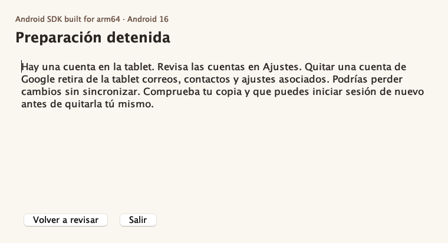
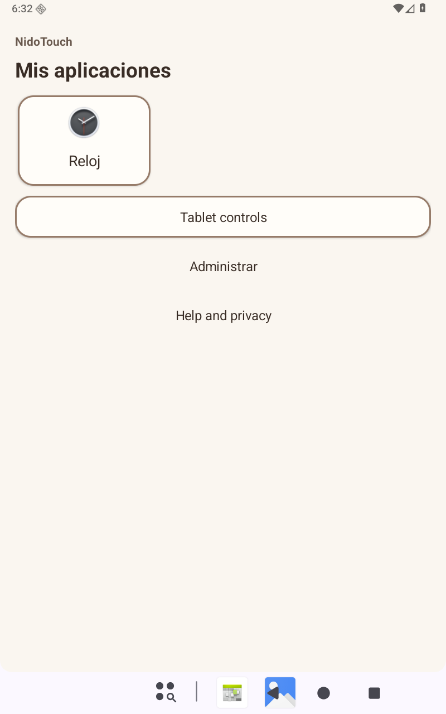

Preparar una tablet con NidoTouch por USB · Piloto 0.1.1¶ ↑
Esta guía acompaña al asistente de escritorio para Mac y Windows y al APK de prueba NidoTouch 0.9.1. La persona responsable utiliza su computadora para preparar la tablet. Después podrá administrar las aplicaciones desde la propia tablet con su PIN.
1. Antes de conectar¶ ↑
Necesitas la autorización del titular, un cable USB de datos, Android 11 o posterior y acceso al usuario principal de la tablet. El proceso puede detenerse por una cuenta, otro perfil, administración de una organización o una limitación del fabricante. Una tablet nueva y sin datos facilita la prueba. Reserva un momento en que nadie esté usando Zoom.
Si pensabas restablecer la tablet, revisa esto antes de decidir. Restablecerla borra aplicaciones y datos de todos los perfiles. Guarda las invitaciones, los días y los horarios de Reunión Fácil fuera del dispositivo. En JW Library respalda tus notas y marcadores, copia el respaldo fuera de la tablet y prevé volver a descargar las publicaciones. Comprueba que puedes entrar en la cuenta de Google anterior con su verificación y que conoces el bloqueo de pantalla. Si falta algo, conserva la tablet como está. El asistente permite empezar con un diagnóstico sin borrarla.
Si el titular ya decidió vaciar otra tablet y verificó sus respaldos, puede usar el procedimiento de restablecimiento del fabricante desde Ajustes. Durante la bienvenida, completa las comprobaciones de identidad que Android solicite. Si Android lo permite, deja para después las cuentas y apps que planeas añadir. Si exige la cuenta anterior, sigue la verificación oficial. Al terminar la bienvenida, continúa con el paso 2. El borrado por sí mismo no concede la administración a NidoTouch. Guía de restablecimiento · Protección del dispositivo · Respaldo de JW Library
2. Abrir el asistente en la computadora¶ ↑
-
Descomprime NidoTouch-USB-0.1.1.zip en una carpeta propia. Deja juntos el asistente, sus dos APK y el manual.
-
La computadora necesita Java de escritorio 17 o posterior. Si ya lo tienes, puedes consultar la versión con java -version. Si hace falta, instala un JRE de escritorio para tu sistema y procesador. Descarga de Eclipse Temurin
-
Descarga SDK Platform-Tools para Mac o Windows desde Android. Descomprime la carpeta platform-tools junto a NidoTouch-USB.jar. Si ya tienes ADB, el asistente también lo busca en el SDK configurado y en la ruta de comandos del sistema. Elegir ADB… permite seleccionar el ejecutable manualmente. Descarga oficial de Platform-Tools
-
En Mac, abre Abrir.command. En Windows, abre Abrir.cmd desde la carpeta extraída. También puedes ejecutar java -jar NidoTouch-USB.jar en esa carpeta. Si tu equipo exige una firma corporativa para abrirlos, consulta a su responsable.
-
En la tablet, activa Opciones para desarrolladores tocando siete veces Número de compilación en la información del dispositivo. Activa Depuración USB, conecta el cable y acepta la autorización en la tablet desbloqueada. Si Windows no la reconoce, comprueba el cable y el controlador USB de su fabricante. Conexión de dispositivos · Controladores de Windows
3. Revisar el resultado¶ ↑
Pulsa Revisar tablet y comprueba el modelo que aparece. Hasta aquí puedes cerrar el asistente sin cambios en la tablet.
-
Lista para intentar la preparación. Si reconoces el equipo y quieres que NidoTouch controle las apps y los cambios de cuenta, pulsa Preparar esta tablet. Android decide si acepta la solicitud.
-
Hay cuentas. Quitar una cuenta de Google retira de la tablet correo, contactos y ajustes asociados. Podrías perder cambios sin sincronizar. Comprueba sincronización, respaldo y acceso a la cuenta. Si decides quitarla, hazlo tú en Ajustes y pulsa Volver a revisar.
-
Hay otro usuario o perfil. Eliminar un usuario borra los datos de ese usuario, incluidas las descargas de sus apps. Comprueba en qué perfil están los datos. Puedes salir sin eliminar nada. Si el perfil es de trabajo, consulta a su administrador.
-
NidoTouch ya administra el equipo. Continúa la configuración existente. Si estás en modo normal, reactiva la protección desde NidoTouch con tu PIN cuando lo desees.
-
No se pudo continuar. Lee el motivo. Si cambiaste el cable o la computadora perdió la conexión, vuelve a revisar el mismo equipo. Si hay administración ajena, otra versión del APK o un estado desconocido, conserva la instalación actual.

Si Android rechaza la administración después de instalar los APK, la tablet no ha quedado protegida. Vuelve a añadir tu cuenta si la retiraste. Al reconectar, el asistente vuelve a consultar el propietario antes de continuar.
4. Configurar NidoTouch en la tablet¶ ↑
-
Una vez que el asistente confirme que NidoTouch ya administra la tablet, vuelve a agregar tu cuenta si la necesitas e instala tus apps antes de aplicar los bloqueos.
-
Abre NidoTouch, pulsa Preparar NidoTouch, elige al menos una app y pulsa Siguiente. Para el uso de la congregación puedes elegir JW Library, Zoom y Reunión Fácil junto con las demás apps que decida el titular.
-
Crea el PIN de administración, copia la clave de recuperación fuera de la tablet y confirma la copia en NidoTouch. Introduce estos datos únicamente en la tablet. Activa la protección y vuelve al inicio de NidoTouch.

5. Reiniciar y comprobar¶ ↑
-
Guarda cualquier trabajo abierto y pulsa Reiniciar y comprobar en la computadora. El arranque puede tardar. Deja conectado el cable.
-
Cuando veas el Inicio protegido, desbloquea la tablet y pulsa Comprobar bloqueos. Si Android todavía está arrancando, espera y vuelve a pulsar. Si cerraste el asistente, vuelve a revisar el equipo y repite el reinicio para comprobar su persistencia.
-
El asistente comprueba el propietario, el Inicio protegido y las tres restricciones de Android. Usa Prueba USB de NidoTouch, un paquete sin código ni datos personales, para intentar instalarlo y desinstalarlo. La comprobación de cuentas lee la restricción efectiva del usuario. Conserva todas las cuentas reales.
-
Abre una app elegida. Vuelve a Inicio, entra en Administrar con tu PIN y pulsa Volver a proteger. En la computadora pulsa Confirmar apps y PIN. El asistente vuelve a comprobar la protección antes de mostrar Protección comprobada.
-
Si falta el paquete de comprobación en un equipo que ya administrabas con esta misma variante de NidoTouch, abre administración con tu PIN, instala solo el archivo comprobacion.apk del mismo ZIP mediante ADB (install -t --user 0), y vuelve a proteger. Repite desde el paso 1. Si alguna comprobación sigue pendiente, conserva el motivo para revisarlo.
-
Al terminar, desactiva Depuración USB en la tablet desde Ajustes en una sesión de administración. Cierra esa sesión y desconecta el cable.
Volver a modo normal o recuperar el PIN¶ ↑
En Administrar, introduce tu PIN y elige Usar como tablet normal. En NidoTouch podrás Reactivar protección con el PIN. El administrador se conserva instalado en modo normal. Si olvidas el PIN, usa Olvidé el PIN y la clave guardada fuera del dispositivo. Confirma la nueva copia que te indique la tablet. Si perdiste ambos, detente antes de considerar un borrado.
Anexo · Preparación manual del piloto¶ ↑
Usa este recorrido técnico solo con la variante y el dispositivo de prueba que hayas identificado. Android documenta el alta por ADB para desarrollo. El soporte de Google indicó que el uso familiar de NidoTouch queda fuera del alta empresarial por QR. Instalar un APK desde el navegador no asigna el propietario. Guía de Android para desarrollo
-
Abre la terminal en la carpeta extraída. En Mac sustituye adb por ./platform-tools/adb. En PowerShell usa .\platform-tools\adb.exe. En los comandos siguientes cambia SERIE por el identificador de la única tablet de prueba conectada.
-
Ejecuta adb devices -l, comprueba el modelo y que diga device. Consulta adb -s SERIE shell am get-current-user, adb -s SERIE shell pm list users y adb -s SERIE shell dpm list-owners. Deben corresponder al usuario principal 0, un único usuario y ningún propietario. Revisa en Ajustes que no haya cuentas, perfiles de trabajo ni administración ajena. Si hay dudas, detente. Si ya aparece NidoTouch como propietario, pasa al paso 5.
-
Verifica las huellas con shasum -a 256 -c SHA256SUMS.txt en Mac o Get-FileHash -Algorithm SHA256 *.apk en PowerShell y compara con las del archivo. Si ya hay otro APK de NidoTouch, usa el diagnóstico del asistente para verificar la identidad y detente ante diferencias.
-
En el dispositivo de pruebas vacío y comprobado ejecuta, uno por uno, adb -s SERIE install --user 0 -t nidotouch-0.9.1.apk, adb -s SERIE install --user 0 -t comprobacion.apk y adb -s SERIE shell dpm set-device-owner --user 0 org.reunionfacil.tabletguard/.GuardAdmin. Detente ante un error. Vuelve a consultar dpm list-owners con la misma serie para confirmar que Android asignó NidoTouch al usuario 0.
-
Reincorpora cuentas y apps, completa el paso 4 de esta guía y prueba los bloqueos después del reinicio. El asistente puede hacer esta verificación aunque hayas preparado la tablet a mano. Para comprobarlo en terminal, consulta en adb -s SERIE shell dumpsys user las restricciones efectivas del usuario 0: no_install_apps, no_uninstall_apps y no_modify_accounts. Con la protección activa, reinstalar exclusivamente comprobacion.apk con -t -r y desinstalar solo org.reunionfacil.nidotouch.usbprobe deben rechazarse por restricción de usuario. Otro error requiere revisión.
-
Para retirar por completo el administrador de pruebas en lugar de usar modo normal, autentícate con tu PIN, activa el modo normal y comprueba que funciona el Inicio del fabricante. En el mismo equipo identificado, adb -s SERIE shell dpm remove-active-admin --user 0 org.reunionfacil.tabletguard/.GuardAdmin solicita retirar el propietario de la variante de prueba. Verifica con dpm list-owners. Desinstalar NidoTouch elimina sus propios ajustes y PIN. Apagar la depuración USB completa la entrega.